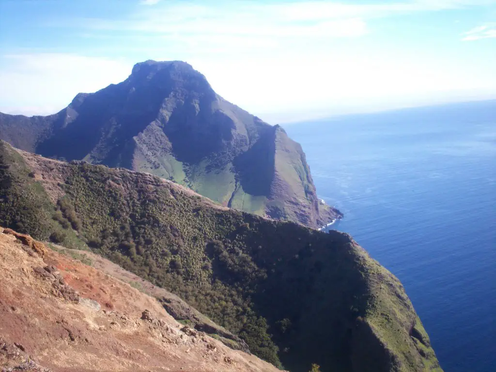

Mirador Sal si puedes
Para acceder al sector de “Sal si puedes”, se debe seguir la
ruta que comienza al final de la calle La Pólvora, este
sendero nos introducirá en un bosque de eucaliptos y
cipreses con una pendiente inicialmente suave que luego
toma mayor inclinación hasta la cima, desde donde se
puede observar una hermosa panorámica del poblado San
Juan Bautista y bahía Cumberland (Servicio Nacional de
Turismo, 2012).

Playa El Arenal
Durante el verano las islas se ven fuertemente afectadas
por corrientes de origen tropical que permiten la
existencia de esta cálida playa de arena, única en el
archipiélago. Se ubica al suroeste del aeródromo
accediéndose por un accidentado sendero, o en bote tras
unas 2 horas de navegación por islotes, acantilados
marcados por la lava y loberías entre las cuales destacan
las de Tres Puntas (Servicio Nacional de Turismo, 2012).

Flora y fauna
En los últimos años el trabajo de un fotógrafo chileno Eduardo Sorensen en la isla ha tenido frutos,
generándose un proyecto integrado por el mismo y Fernando Luchsinger, para demostrar y fotografiar
la rica flora y fauna marina de Chile, porque el mar chileno no es gris como se cree.
Clima
Su clima es marítimo subtropical con una elevada humedad ambiental, siendo de 15,3 °C el promedio
anual de temperatura. La precipitación media anual llega a los 1.041,5 mm; las lluvias decrecen
entre octubre y febrero.